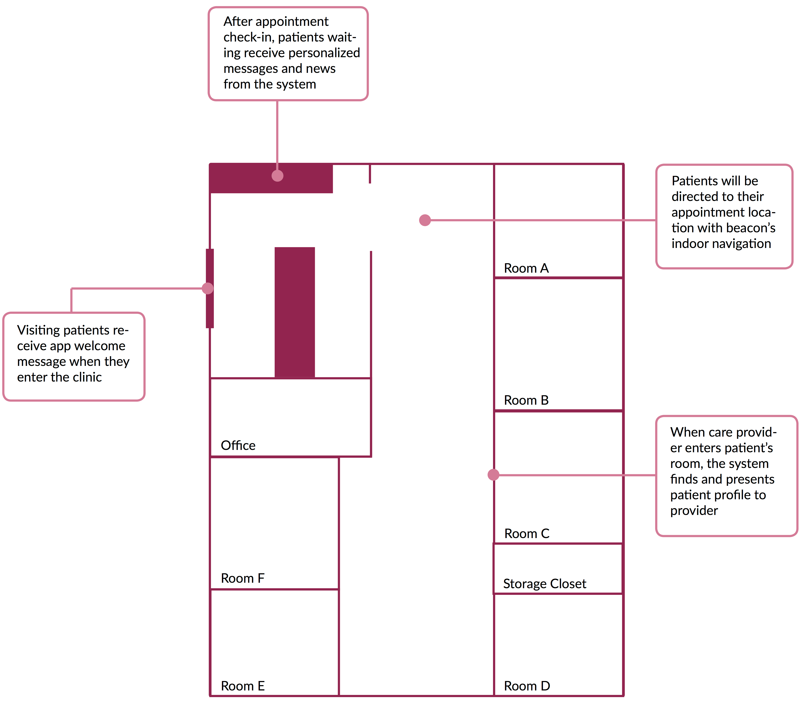

At the 2015 Grace Hopper Conference in Houston, TX, I had the pleasure to talk about Patient Experience using beacon technology, a research & development project that I was the lead designer for at PwC. I also created a concept video showcasing the use cases of beacons, which was also presented at the conference. You can also learn more about Estimote Beacons here.
There has been a ton of conversation about how to utilize beacons - these BLE transmitters with embedded sensors, to better improve consumer experience. The advantage of beacons is its ability to enable applications to be contextually-aware of people's whereabouts and provide information to the user at the appropriate time and place. This type of personalization is not yet prevalent on the market but is quickly gaining traction.
My talk was focused specifically on the application of beacons in the hospital setting. Attending doctor's appointments is often a daunting but necessary task as part of our effort to maintain our health. Patients can spend an indefinite amount of time at the hospital looking for the appointment location and sitting in the waiting area. However, beacons can be used in situations as such to alleviate the stress that comes from the unpredictability of the experience and transform that into a much more efficient and educational one. Some use cases that were discussed include indoor navigation, a virtual point-of-interest guide and a newsboard that personalizes the article list based on the user's profile.
Grace Hopper Conference 2015 was truly an inspiring experience where a community of passionate indivduals come together to learn, share and explore interesting technology topics. I encourage anyone in the field to attend.